Les Fondations de la Diplomatie Alaouite
Histoire des pratiques diplomatiques (1666-1912)
Problématique centrale : Comment le droit international est-il passé d'un outil de projection souveraine à un ultime rempart contre l'annexion ?
Plan bipartite
Partie I
Le Dispositif Diplomatique Chérifien — Architecture et Projection (1666-1844)
Partie II
La Diplomatie de Résistance — Encerclement Colonial et Protectorat (1844-1912)
Accroche narrative : le paradoxe
- 20 décembre 1777 : reconnaissance des États-Unis, ouverture des ports.
- 1786 : traité de paix et d'amitié, plus long traité US ininterrompu.
- Basculement : d'une puissance qui fait le droit à une diplomatie de survie.
« Un oiseau sans ailes. » — En-Naciri
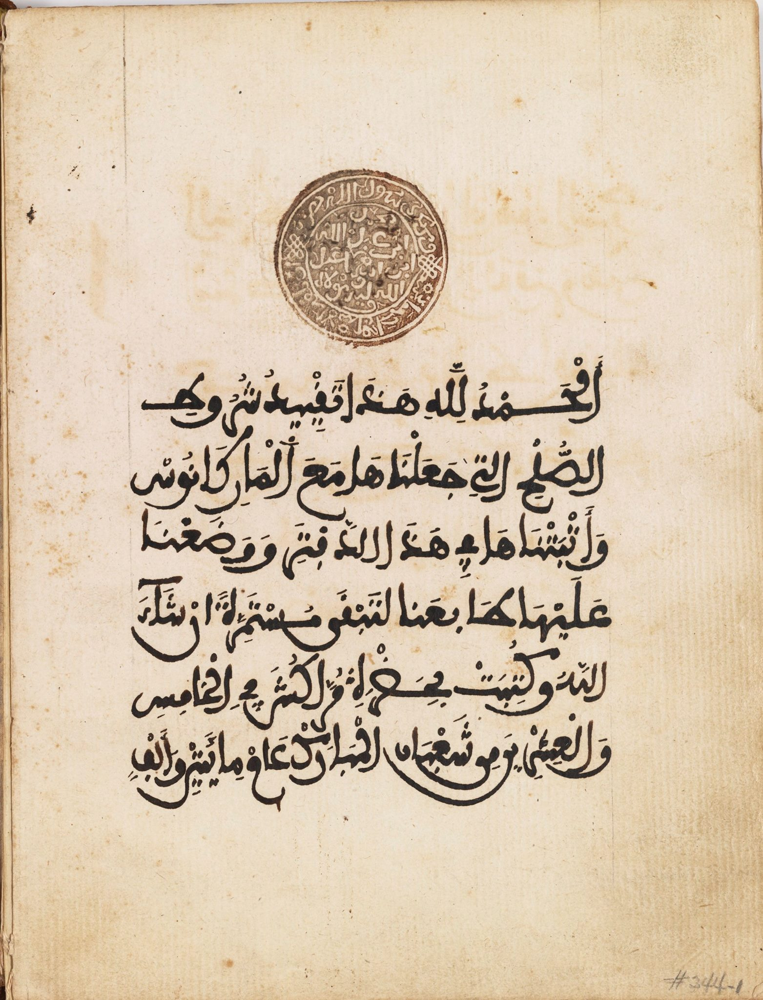
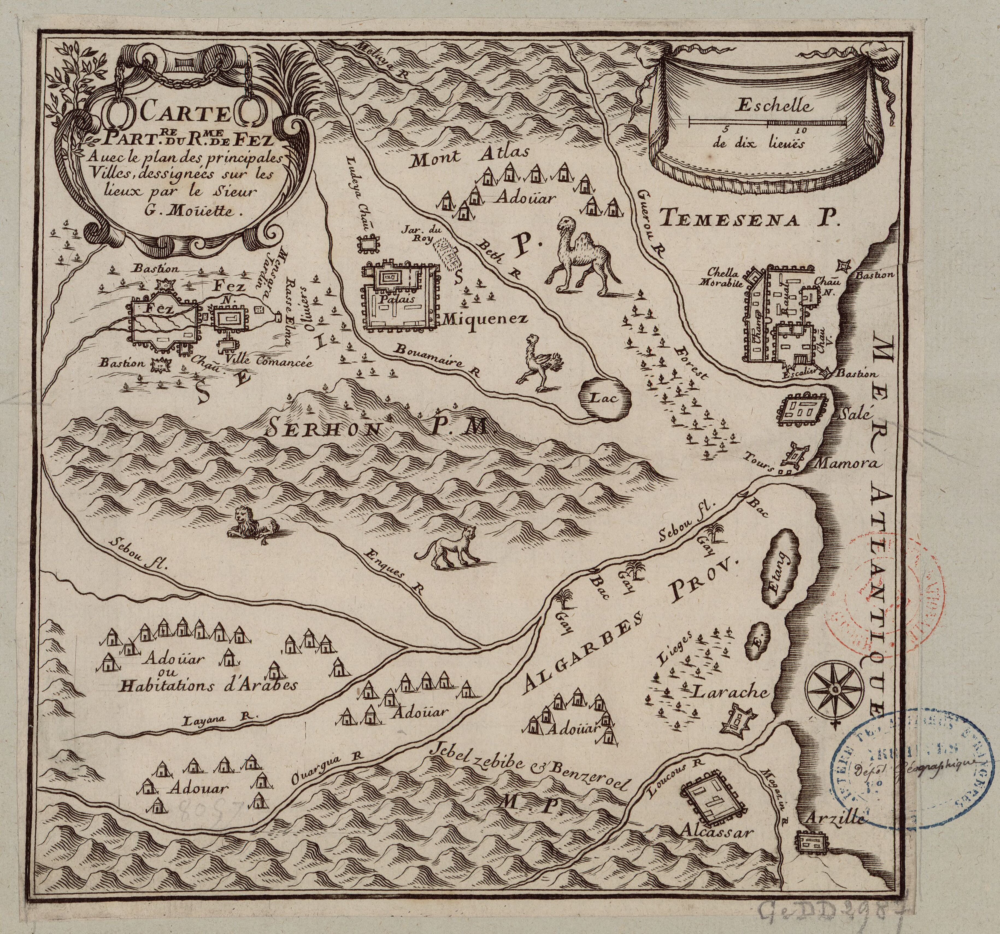
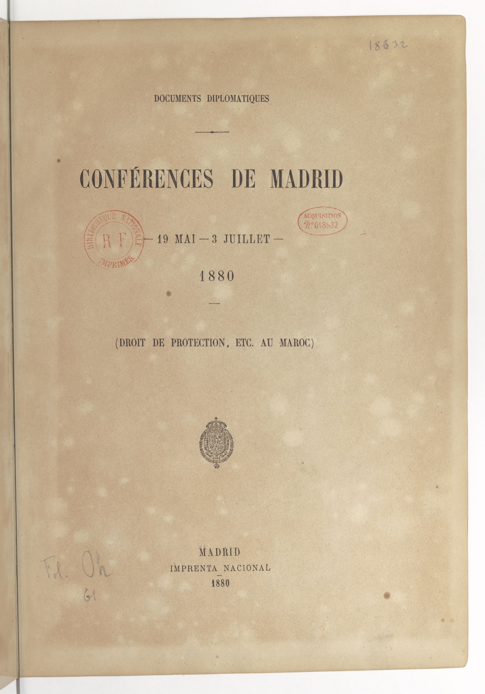
Fondements théologico-politiques
Catégories juridiques
- Bay'a : allégeance contractuelle, obligation de défense.
- Dar al-Islam / Dar al-Harb : temporalité des accords.
- Opposition à la souveraineté territoriale westphalienne.
Référence CIJ 1975
Reconnaissance de « liens juridiques d'allégeance » sans souveraineté territoriale au sens moderne.
Avis consultatif CIJ (Sahara Occidental), 16 octobre 1975.
La genèse alaouite
- Moulay Chérif : unification du Tafilalet, sécurisation Sijilmassa-Moulouya.
- Moulay Rachid : fondation de l'État, Fès (1666), soumission Dila et Salé.
- Ouverture pragmatique : liberté commerciale accordée aux Français.
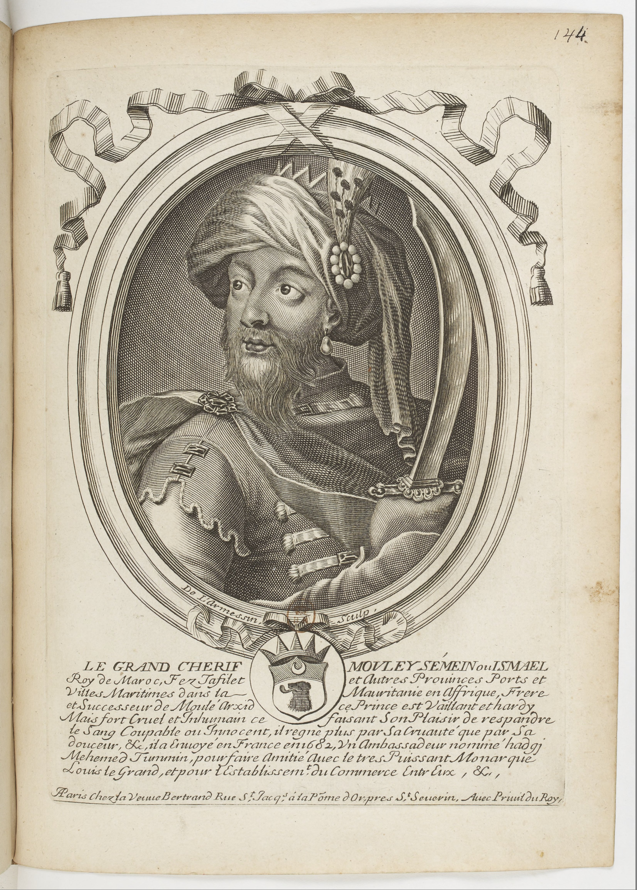
Moulay Ismaïl : refus de la suzeraineté ottomane
- Argument du Nasab : légitimité prophétique contre le Califat ottoman.
- Échanges avec les ambassadeurs turcs d'Alger (vers 1654).
- Fixation de la frontière orientale : Oued Tafna (1678).
« Agiter le brandon de la révolte... » — correspondance turque
La réponse alaouite fonde la prétention à l'égalité souveraine.
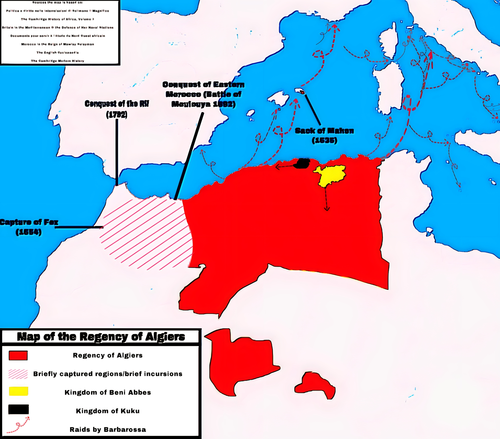
Diplomatie du « pair à pair »
- Récupérations : La Mamora (1681), Tanger (1684), Larache (1689).
- Ambassade Mohammed Temim (Paris, 1682) : alliance anti-espagnole refusée.
- Traité de 1721 avec l'Angleterre : juridiction du Sultan sur les litiges.
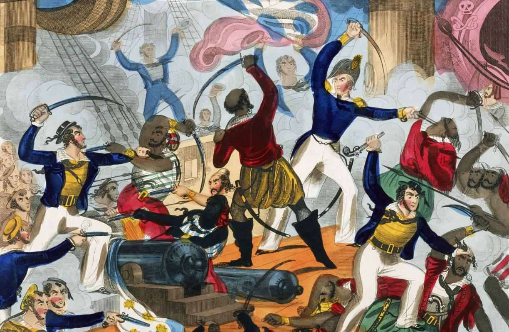
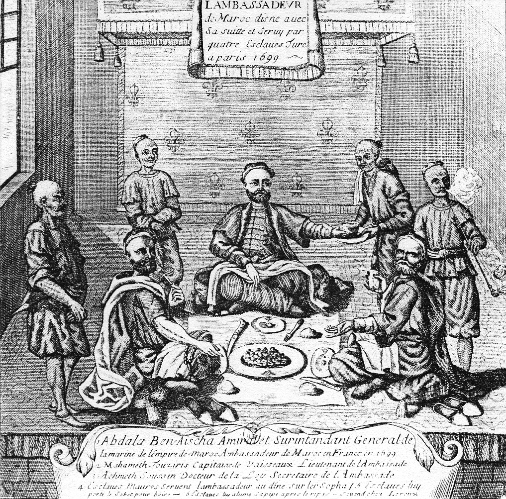
Diplomatie corsaire : la contrainte organisée
- Nationalisation de la course de Salé : contrôle étatique.
- Capture du Betsey (1784) pour forcer la négociation US.
- Tributs Danemark/Suède, fournitures militaires en échange de sécurité.
- « Dossier des captifs » : rachat, échange « tête pour tête ».
La course est une diplomatie de la contrainte : elle déclenche des traités et organise la paix.
Fin officielle en 1817 sous Moulay Slimane.
La parenthèse de l'anomie (1727-1757)
- Mort de Moulay Ismaïl : trente ans de crise dynastique.
- Les Abid al-Bukhari deviennent faiseurs de rois.
- Succession chaotique, paralysie diplomatique.
Sidi Mohammed ben Abdallah : l'architecte
- Rupture : du corsaire au traité.
- Traités : Danemark, Suède, France (1767).
- Reconnaissance américaine (1777) et traité de 1786.
Le Maroc passe d'une diplomatie d'armes à une diplomatie contractuelle fondée sur la paix perpétuelle.
Essaouira (Mogador) : laboratoire diplomatique
- Port-relais diplomatique et commercial.
- Concentration des douanes et ouverture aux consuls.
- Pivot de l'ouverture atlantique au XVIIIe siècle.

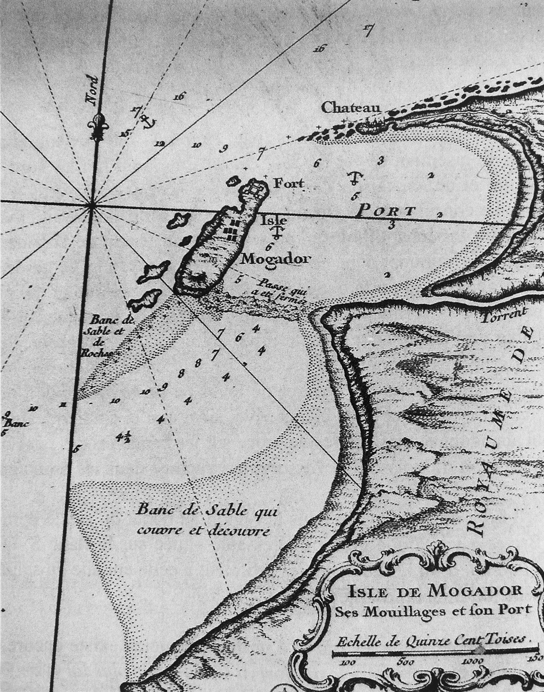
Appareil diplomatique : la gestion de la distance
Le Naib à Tanger
- Intermédiaire obligatoire entre légations et Sultan.
- Fonction de filtrage et temporisation.
Missions extraordinaires
- Ambassadeurs ponctuels : vizirs, lettrés, corsaires.
- Absence d'ambassades résidentes permanentes.
Acteurs intermédiaires
Tujjar as-Sultan
Réseau marchand, intelligence économique.
Familles Guedalla, Corcos, Macnin.
Famille Pallache
Intermédiation confessionnelle héritée des Saadiens.
Renégats (Elj)
Connaissance linguistique et diplomatique des puissances européennes.
Moulay Slimane : la politique de précaution
- Réaction aux guerres napoléoniennes : Ihtiyat.
- Influence wahhabite et repli diplomatique.
- Arrêt officiel de la course (1817), désarmement naval.
Bilan de la Partie I
- Souveraineté projetée par la course, les traités et la parité statutaire.
- Base technologique fragile face au changement d'échelle européen.
- Diplomatie structurée par la légitimité chérifienne et la Bay'a.
Transition
La révolution industrielle bouleverse le rapport de force : le Maroc entre dans une ère d'asymétrie structurelle.
Le choc d'Isly (1844)
- Défaite face aux troupes du maréchal Bugeaud.
- Révélation du gouffre technologique.
- Début d'une diplomatie de résistance.

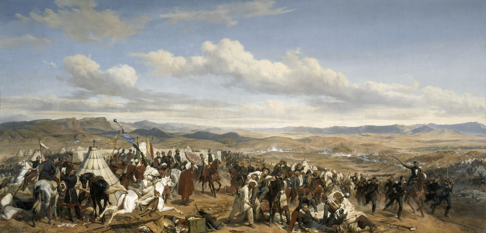
1856 : le tournant de l'Empire informel
- Traité anglo-marocain (Drummond Hay).
- Fin des monopoles royaux (Kuntradat).
- Droits de douane plafonnés à 10 %.
- Extension des droits consulaires : protections massives.
« La souveraineté n'a pas été perdue militairement en 1912 ; elle a été dissoute économiquement en 1856. » — Ben-Srhir
La guerre de Tétouan (1859-1860)
- Défaite face à l'Espagne.
- Occupation de Tétouan et indemnité de 20 millions de douros.
- Mise sous tutelle des douanes, endettement durable.
La Convention Béclard (1863)
- Institutionnalisation de la protection consulaire.
- « État dans l'État » : protégés soustraits à la justice et à l'impôt.
- Érosion de l'autorité makhzénienne.
Conférence de Madrid (1880)
- Initiée par Hassan Ier pour limiter les protections.
- Résultat : internationalisation et légalisation du système.
- Conséquence : légitimation de l'extraterritorialité.
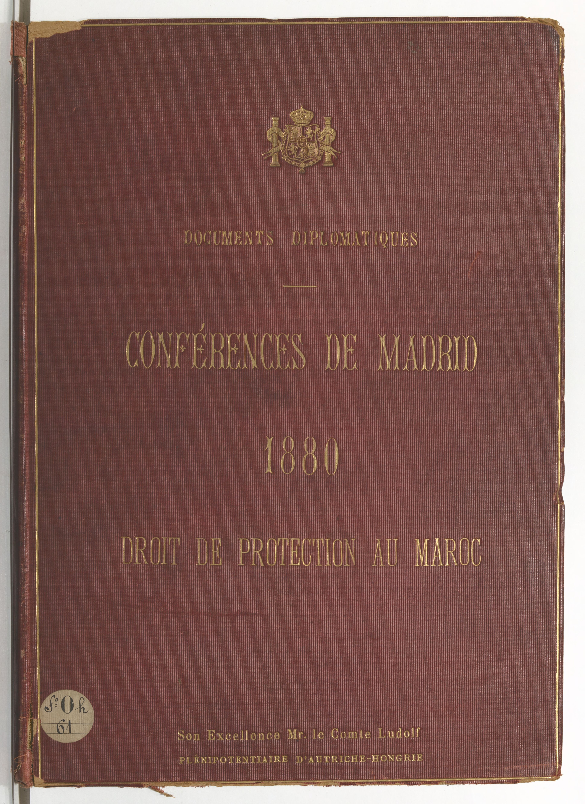
La stratégie du Tadmin
- Internationaliser les crises pour éviter l'hégémonie d'une puissance.
- Diplomatie pendulaire : jouer les rivalités européennes.
- Neutraliser par la concurrence des garants.
Moulay Hassan Ier : la résistance
- Diplomatie de résistance pendulaire.
- Convention de Madrid (1880) pour limiter les protections.
- Internationalisation qui retourne la logique défensive contre le Makhzen.
1904 : le verrouillage diplomatique
- Entente Cordiale (8 avril 1904) : mains libres françaises au Maroc.
- Accord secret franco-espagnol (3 octobre 1904) : zones d'influence.
- Démembrement préventif négocié sans le Maroc.
Le coup de Tanger (1905)
- Guillaume II affirme l'indépendance du Sultan.
- Exige une conférence internationale.
- Internationalisation accélérée de la crise.
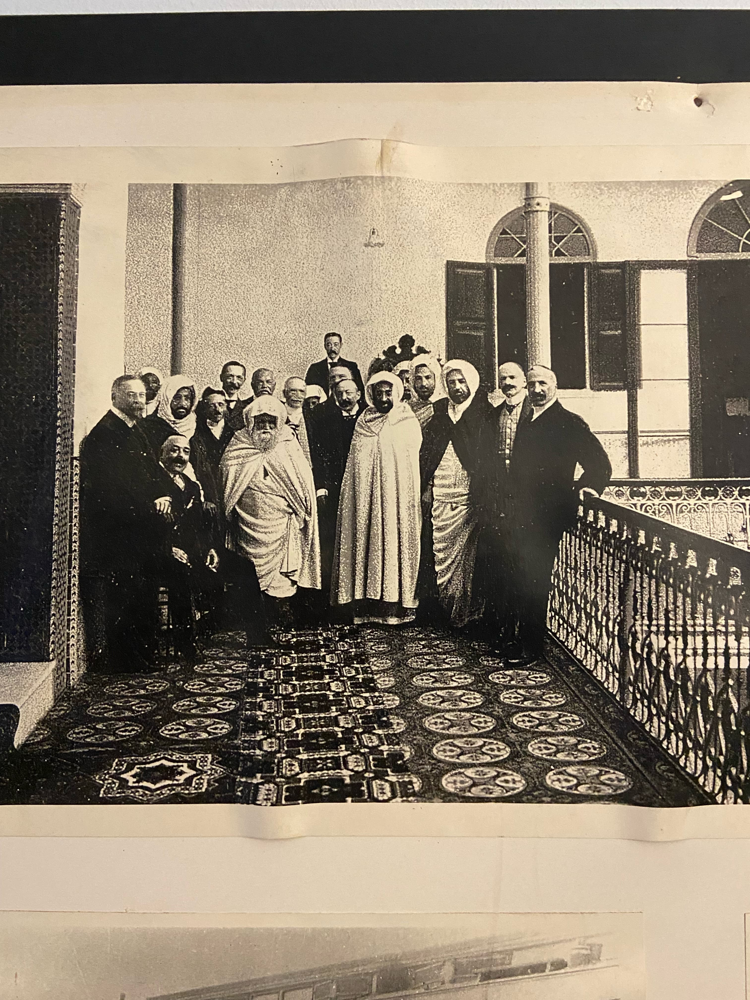
Conférence d'Algésiras (1906)
- « Souveraineté et indépendance du Sultan » affirmées.
- Police des ports confiée à la France et l'Espagne.
- Banque d'État du Maroc sous capitaux majoritairement français.
Victoire formelle, défaite réelle : l'internationalisation légalise l'ingérence.
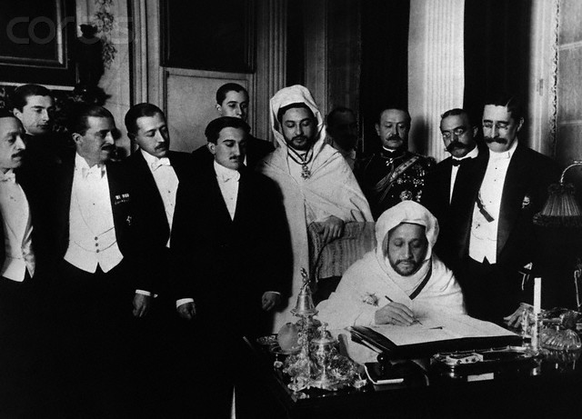

L'engrenage de l'endettement
La combinaison des indemnités de guerre et de la perte des recettes douanières crée un cercle vicieux :
Défaite militaire → Indemnité → Endettement → Tutelle douanière → Affaiblissement militaire
La crise finale (1907-1911)
- Bombardement de Casablanca (1907) et occupation de la Chaouia.
- « Coup de Fès » (mai 1911) : intervention française.
- Crise d'Agadir (juillet 1911) : canonnière Panther.
- Accord franco-allemand (4 novembre 1911).
Le Traité de Fès (30 mars 1912)
- Signataires : Moulay Hafid / Eugène Regnault.
- Résident général : seul intermédiaire avec l'étranger.
- Maintien du prestige religieux du Sultan (dahirs).
Paradoxe : l'État existe juridiquement, ses attributs régaliens sont transférés.
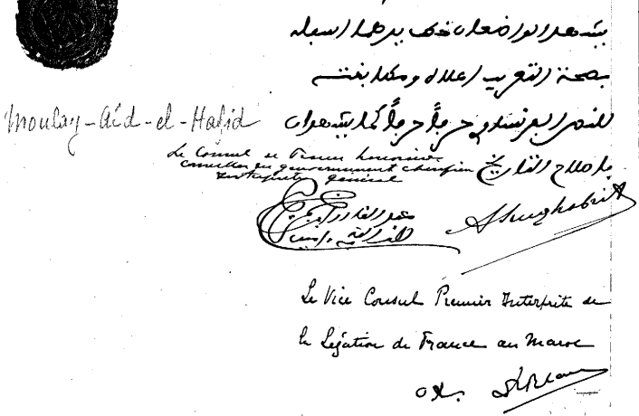
Analyse juridique : la souveraineté amputée
- Ce n'est pas une annexion : l'État marocain subsiste.
- La Bay'a est fragilisée, mais maintenue formellement.
- CIJ 1952 : l'État marocain n'a jamais cessé d'exister.
Tableau comparatif : Ottoman vs Alaouite
Modèle ottoman
- Dissociation spirituel/territorial.
- Califat utilisé pour gérer le recul.
Modèle alaouite
- Fusion identité/territoire.
- Bay'a interdit la cession : rigidité protectrice.
Frise chronologique synthétique
1666-1727
Fondation et projection.
1727-1757
Anomie et paralysie.
1757-1822
Contrats et ouverture.
1822-1860
Chocs et pertes.
1860-1906
Encerclement juridique.
1906-1912
Chute et protectorat.
Synthèse finale
Le droit international passe d'un bouclier contre la terra nullius à un instrument de domination : la souveraineté est maintenue en forme mais vidée en substance.
La diplomatie alaouite révèle ainsi une trajectoire : projection → résistance → souveraineté amputée.
Bibliographie académique (sources du corpus)
- Daniel Rivet, Histoire du Maroc.
- Michel Abitbol, Histoire du Maroc.
- Abdelhadi Tazi, Histoire diplomatique du Maroc.
- Khalid Ben-Srhir, Le Maroc et la Grande-Bretagne.
- En-Nasiri, Kitab al-Istiqsa.
- Documents Diplomatiques - Affaires du Maroc.